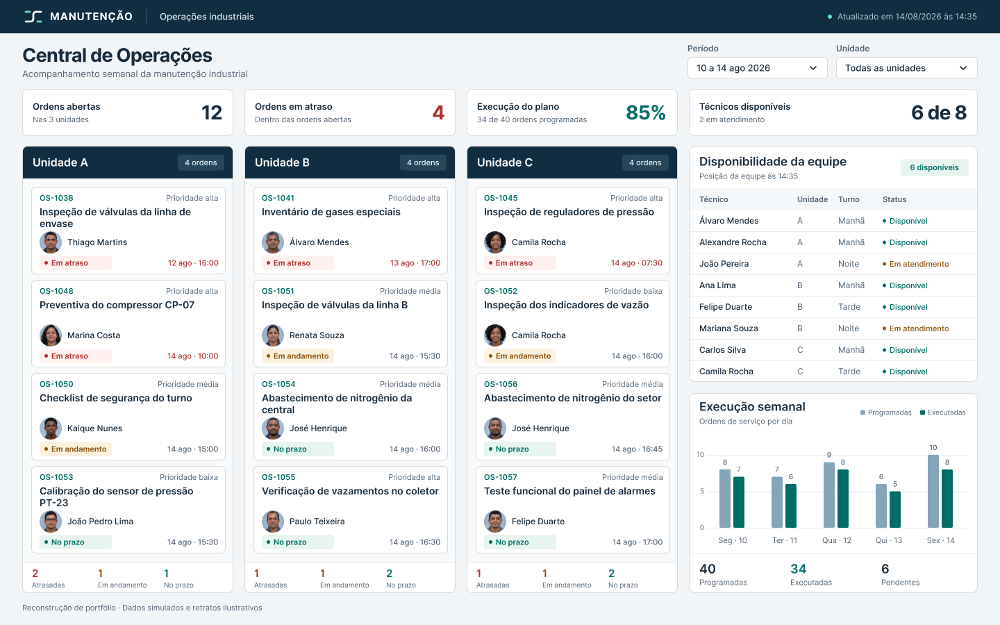

Todos os projetos
Central de Operações de Manutenção
Painel desenvolvido na etapa prática do Programa EmbarcaTech em uma empresa do setor de energia para acompanhar centenas de ordens de serviço por mês.
Painel de manutenção


O que a operação acompanha
O painel reúne o backlog, o tempo médio de atendimento e o cumprimento de SLA. O recorte por unidade ajuda a identificar ordens atrasadas, e a comparação entre ordens programadas e executadas mostra como a manutenção avançou ao longo da semana.
Da API ao Power BI
Implementei a conexão direta com a API do Fracttal, preparei os dados no Power Query, criei as medidas em DAX e construí os visuais no Power BI. Apresentei a solução às áreas envolvidas no projeto.
- API Fracttal
- Power Query
- DAX
- Power BI
- Figma (mockup)